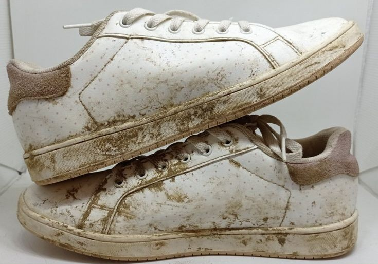

CuciWangi Bandung menawarkan layanan pembersihan profesional untuk sepatu dan sandal Anda.
Kembalikan kebersihan, kenyamanan, dan kepercayaan diri Anda dengan sepatu yang bersih dan wangi.
Dari sneakers hingga sandal favorit, kami siap membantu menjaga tampilannya tetap prima!

Sepatu terlihat kotor dan kusam akibat debu, lumpur, atau noda membandel. Kebersihan dan tampilan asli sepatu mulai memudar, memengaruhi kepercayaan diri Anda saat menggunakannya.
Setelah melalui proses pembersihan profesional, sepatu kembali bersih, wangi, dan terlihat seperti baru. Nikmati kenyamanan dan tampil percaya diri dengan sepatu yang terawat.
"Luar biasa! Sepatu saya kembali seperti baru." - Dinda, Bandung
✔ Pembersihan menyeluruh
✔ Bahan aman untuk semua jenis sepatu
✔ Layanan cepat dan berkualitas
✔ Hasil wangi dan nyaman dipakai